Sight Words
Sight words are the words your child will learn to read at a glance — the, said, was, you — without stopping to sound out every letter. This page gives you the two classic Dolch sight word lists as free printable flashcards: the 40-word Pre-Primer list and the 52-word Primer list, plus a one-page word list chart with both sets. The cards are made for children roughly ages 5 to 7, in kindergarten through grade 2, who are starting to read real books. Print a sheet, cut out the eight big cards, and practice for five minutes a day — that is genuinely all it takes. Below you will find how to use the cards, a few games that make practice feel like play, and both lists ready to print. Everything is free, with no signup.
Last updated: October 20, 2026
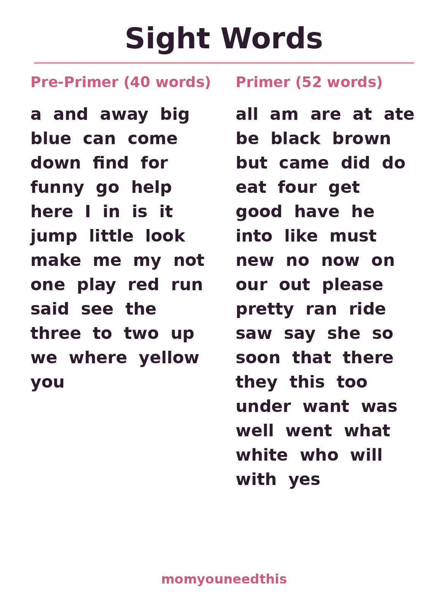
🖨️ Print the Word List Chart
Start with the chart: both complete lists on one page. Hang it where your child reads, check off words as they master them, and use it to choose which flashcard sheet to print next.
⬇️ Open Free Printable 🖨️ Print🎁 Free printables for ages 5–7 — no signup needed
🔤 Pre-Primer Sight Words — the First 40 Words
The Pre-Primer list is where almost every young reader starts. These 40 words are the backbone of the simplest storybooks.
The Dolch Pre-Primer list was built from the words that appear most often in children's books, and it shows: a child who knows these 40 words can already recognize a surprising share of every page in a beginner reader. The list is mostly tiny, friendly words — a, I, the, see, go, my — with a few longer ones like yellow, funny and three mixed in. Work through the five sheets in order, or jump to whichever sheet holds the words your child's class is learning this week. The words on each sheet are listed under its picture so you can find the right one fast.
a, and, away, big, blue, can, come, down, find, for, funny, go, help, here, I, in, is, it, jump, little, look, make, me, my, not, one, play, red, run, said, see, the, three, to, two, up, we, where, yellow, you
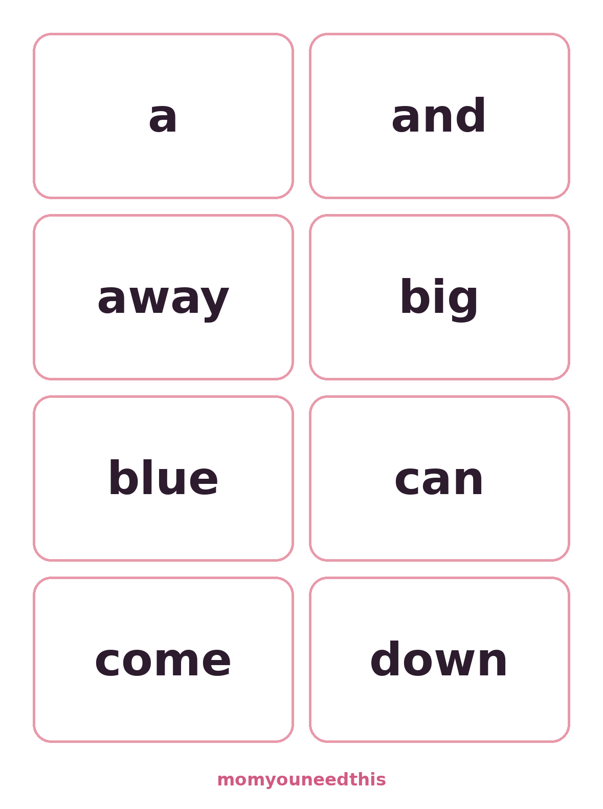
Sheet 1: a, and, away, big, blue, can, come, down
⬇️ Open Free Printable 🖨️ Print
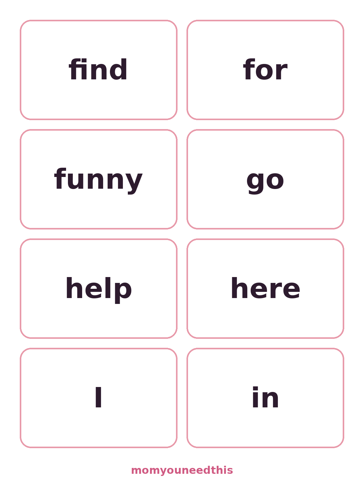
Sheet 2: find, for, funny, go, help, here, I, in
⬇️ Open Free Printable 🖨️ Print
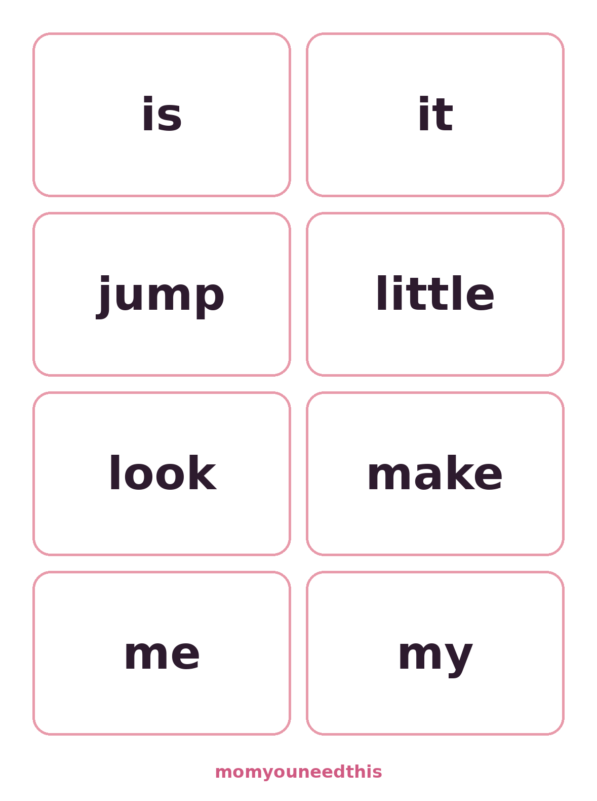
Sheet 3: is, it, jump, little, look, make, me, my
⬇️ Open Free Printable 🖨️ Print
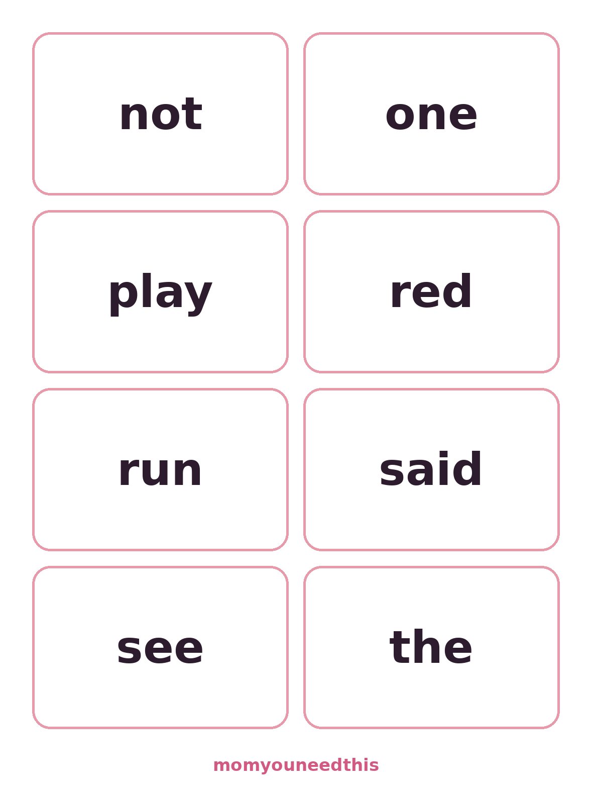
Sheet 4: not, one, play, red, run, said, see, the
⬇️ Open Free Printable 🖨️ Print
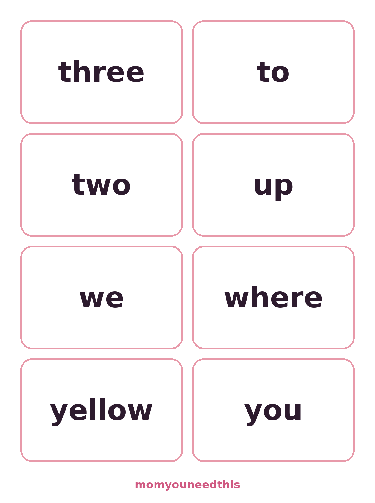
Sheet 5: three, to, two, up, we, where, yellow, you
📚 Primer Sight Words — 52 More Words
Once the first 40 feel easy, the Primer list adds the words that carry first-grade stories: have, like, that, there, please.
The 52 Primer words pick up where Pre-Primer stops. They include the question and action words that make sentences interesting — did, eat, get, ride, saw, want — plus the polite heavy-lifters please and yes. Children usually meet this list in late kindergarten or first grade. It has seven sheets; the last sheet holds just four cards (who, will, with, yes), which makes it a satisfying, quick finish line. Keep mixing a few Pre-Primer cards into practice so the first list stays sharp while the second one grows.
all, am, are, at, ate, be, black, brown, but, came, did, do, eat, four, get, good, have, he, into, like, must, new, no, now, on, our, out, please, pretty, ran, ride, saw, say, she, so, soon, that, there, they, this, too, under, want, was, well, went, what, white, who, will, with, yes
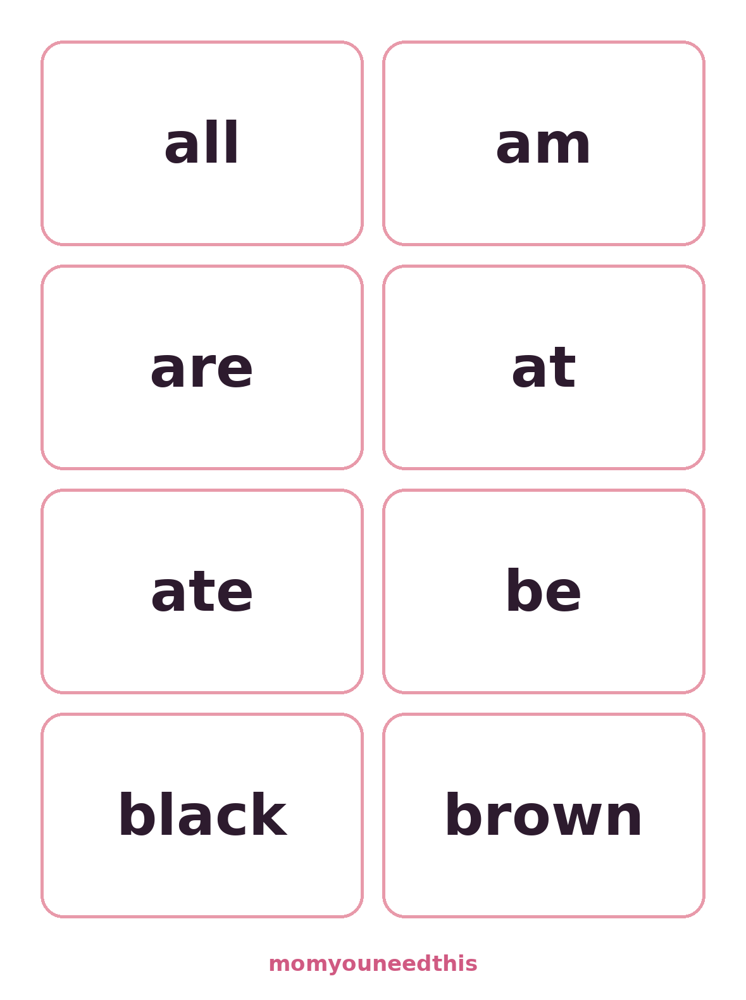
Sheet 1: all, am, are, at, ate, be, black, brown
⬇️ Open Free Printable 🖨️ Print
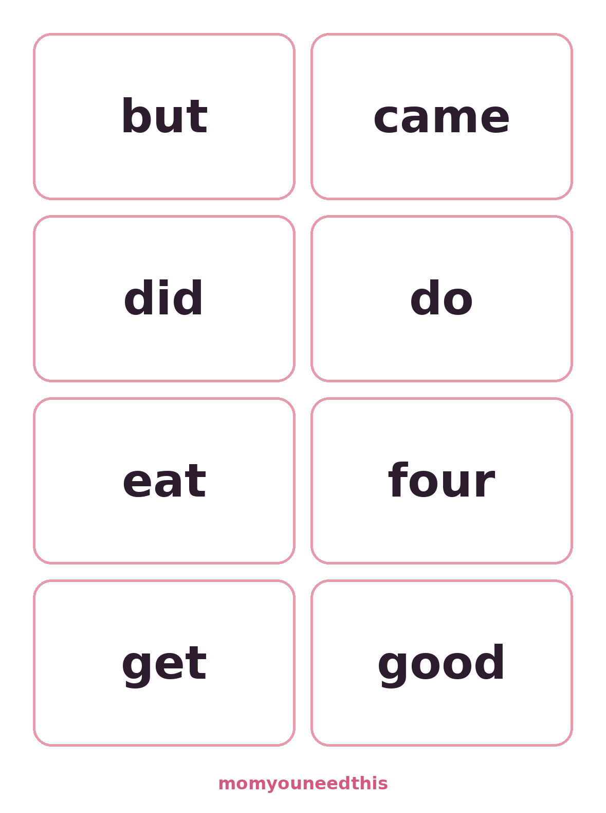
Sheet 2: but, came, did, do, eat, four, get, good
⬇️ Open Free Printable 🖨️ Print
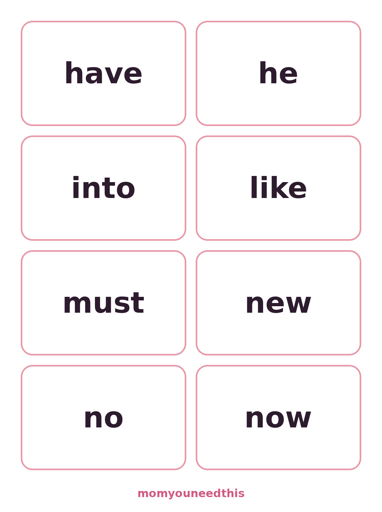
Sheet 3: have, he, into, like, must, new, no, now
⬇️ Open Free Printable 🖨️ Print
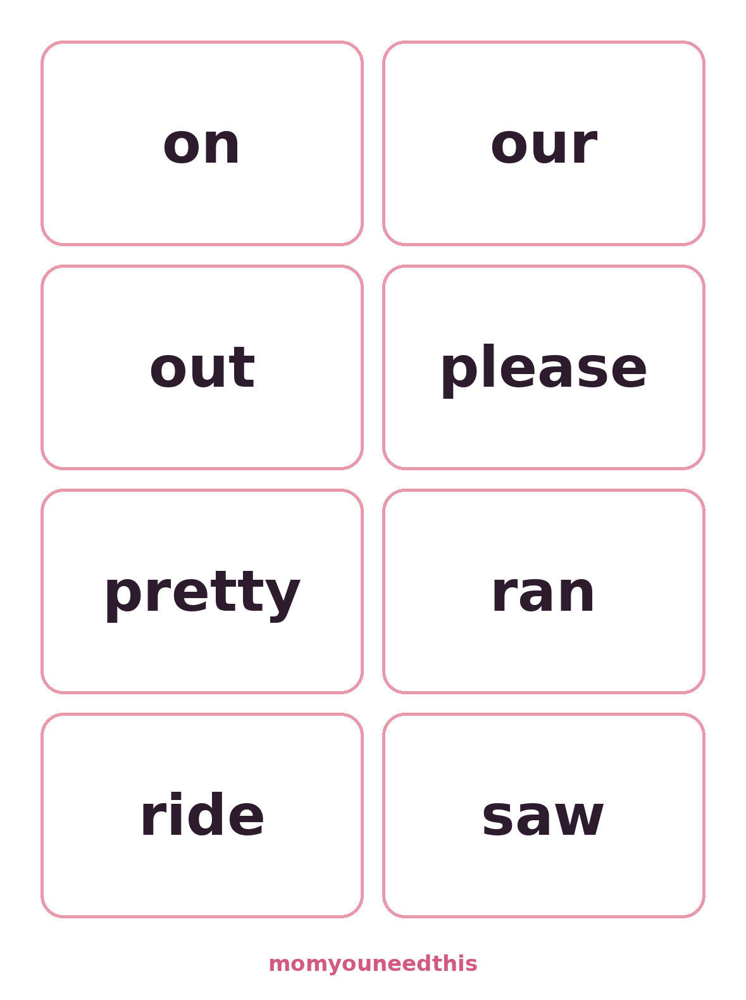
Sheet 4: on, our, out, please, pretty, ran, ride, saw
⬇️ Open Free Printable 🖨️ Print
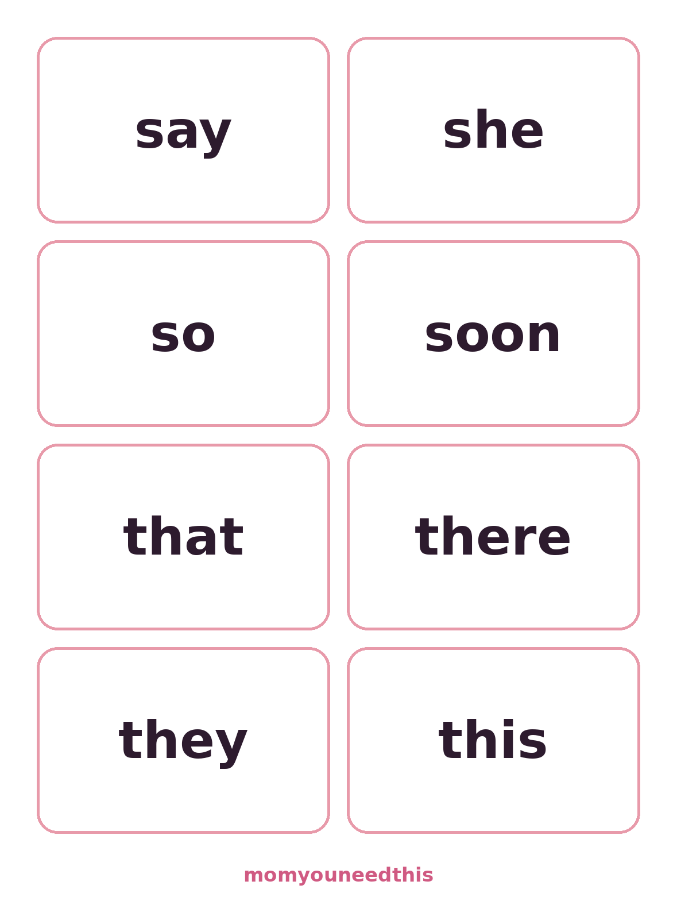
Sheet 5: say, she, so, soon, that, there, they, this
⬇️ Open Free Printable 🖨️ Print
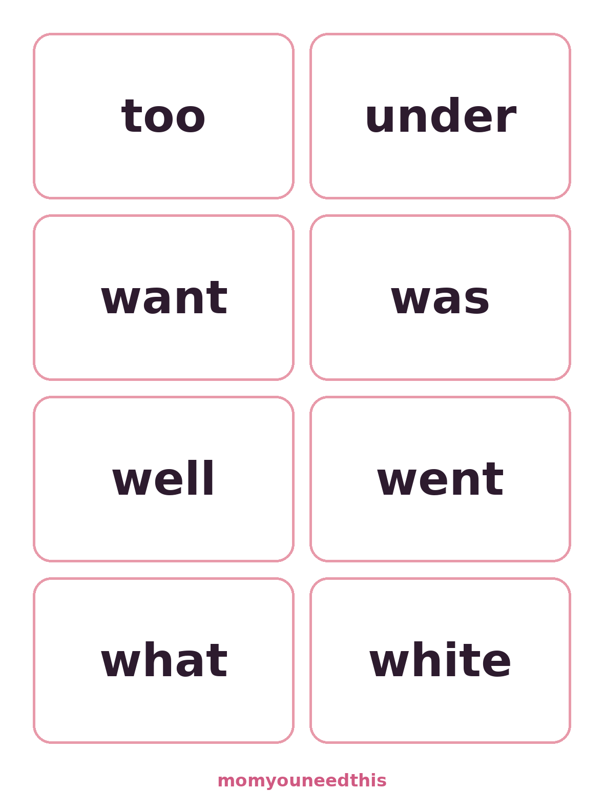
Sheet 6: too, under, want, was, well, went, what, white
⬇️ Open Free Printable 🖨️ Print
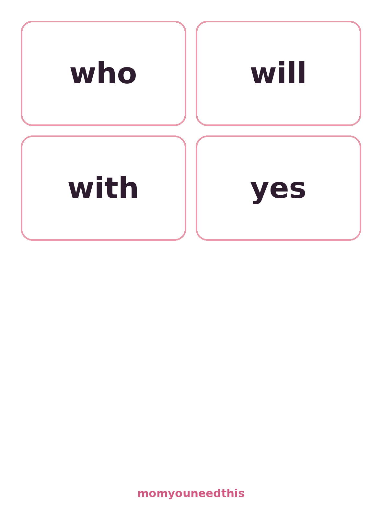
Sheet 7: who, will, with, yes
📖 How to Use the Flashcards
Flashcards work because they are small, quick and repeatable. Here is the routine that gets results without turning practice into a battle.
- Print and cut one sheet at a time. Each sheet holds eight cards. Cut along the rounded borders — cardstock or a laminator makes them last, but plain paper works fine, and reprinting a lost card costs nothing.
- Start with just five words. Pick five cards and only five. Say each word yourself first, have your child repeat it, then mix the cards up and let them try. A small stack they can finish is a win they will want to repeat tomorrow.
- Keep it to five minutes a day. Short daily sessions beat long weekly ones, because recognition is built by frequent glimpses, not marathon drills. End while your child is still enjoying it, ideally right after a card they nailed.
- Add words slowly, retire the easy ones. When a word is read instantly three days in a row, move it to the "mastered" pile and bring in a new one. Shuffle mastered cards back in once a week so they stay fresh.
🎲 Two Games That Stretch the Cards Further
Two games stretch the same cards much further. For matching pairs, print two copies of a sheet, lay the sixteen cards face down, and take turns flipping two to find a match — your child reads every card they touch. For a word hunt, hand over one card and challenge your child to find that word in a real book, on a cereal box, anywhere in the house. Spotting "the" in the wild, in a story you are reading together, is the moment the practice turns into reading.
🗺️ What's Next After Sight Words
Sight words are one piece of early reading. Pair them with letter and handwriting practice and the pieces reinforce each other: a child who can write a word remembers its shape faster. This page is part of the Older Kids section, where the bigger-kid printables live. From there you can move on to the Cursive Worksheets when your child is ready for joined-up writing, or keep building reading confidence one five-minute session at a time — that steady, small habit is what turns word recognition into a reader.
❓ Frequently Asked Questions
What are sight words?
Sight words are the words children learn to recognize instantly, at a glance, without sounding them out letter by letter. Many of them — like the, said and was — do not follow the usual phonics rules, so memorizing their shape is the fastest way to read them. When a child knows these words by sight, reading sentences stops being a puzzle and starts flowing, because sight words make up a large share of every beginner book.
Which list should my child learn first?
Start with the Pre-Primer list. Its 40 words — the, a, I, see, go and their friends — are the first words most kindergarten programs teach, and they appear in the very simplest reading books. Once your child can read most of the Pre-Primer cards without pausing, move on to the Primer list, which is the usual next step in late kindergarten and first grade.
What age should kids learn sight words?
Most children start sight words around ages 5 to 7, in kindergarten through second grade. Kindergarteners usually begin with the Pre-Primer list, first graders work through the Primer list, and second graders review both while reading longer books. Every child moves at their own pace — short, cheerful practice sessions matter more than hitting a particular list by a particular birthday.
Are the flashcards free?
Yes — every flashcard sheet and the word list chart on this page are completely free to print at home. No signup, no account and no email. Print one set for practice, two sets if you want to play the matching game, and as many replacement sets as you need when a card inevitably disappears under the couch.
How often should we practice sight words?
Little and often wins: about five minutes a day is plenty for most young children. Keep a small stack of cards in rotation, add one or two new words when the current ones feel easy, and stop while it is still fun. Five happy minutes every day builds far more recognition than one long session once a week.